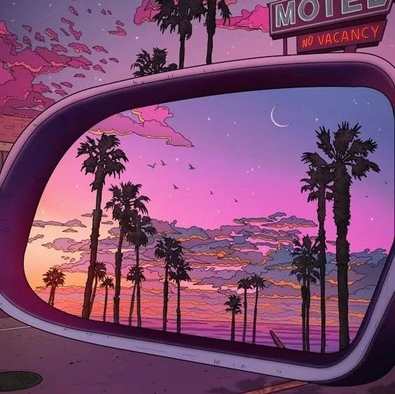

数字桃花源×客厅对话, 追寻理想的数字游牧 | 全球十城联动
作者: 客厅对话×NCC
牧牛，牧羊，遛电脑和行李箱。

游牧在词典里，意味着「逐水草而居」，游牧民族随着气候和资源变化而不断迁移。如今，交通发展，数字化时代加速，世界彼端似乎都已经触手可及。「游牧」一词便成了一种「生活」。它让个体能如候鸟一样，逐喜欢的气候、择喜欢的栖息地、结识多元的朋友。这种生活如吴均描述的那般：“舟行碧波上，人在画中游”，自由惬意。
某种程度上，当代游牧者可以称得上“当代徐霞客”，正追寻自己的「理想社会」，追寻自己的「桃花源」。此刻，现代生活与古时壮游辉映重叠。
但2024年是不同的。
这一年人工智能持续飞跃，更多人机协作、混合办公的模式的想象，让我们更明确地感知到——数字游牧不再仅仅意味着摆脱固定地点的自由，更代表着未来远程工作与灵活就业的崛起趋势。
我们有没有可能通过创造理想工作来建造一个理想社会？
我们将在本次系列对话中，一起畅想理想社会的模样和未来工作的形态。当媒体屏幕代替了人们的眼睛，当信息生产逐步替代物质生产，当人工智能释放了创造力……未来会如何？
远程工作会成为趋势吗？时间自由后，我们仍会是数字劳工吗？我们会被要求适应灵活切换的工作模式吗？数字游牧生活到底意味着什么？……这或许会是一场充满哲思的想象，也有可能成为生涯中一个静悄悄的转折。
我们期待提供一个自由探索未来生活与工作形态的交流空间。无论你正探寻工作意义的青年，还是寻求职业灵活性的数字游民，或是关注职业发展的行业先锋，都能在这场追寻「数字桃花源」的活动中发现可能。
2024 年 10 月底，我们将和身处世界各地的伙伴共同举办多地联合线下聚会，分享和讨论有关 "未来、游牧、桃花源" 的各项议题。话题可能包括但不限于：
👉 理想工作的未来形态是怎样的？
👉 远程工作是否解放了我们的时间和双眼？
👉 AI 对未来数字游牧生活的影响？
👉 真正的「桃花源」何迹可寻？
借助一系列发生于客厅中的集体对面谈话，使观点与教育背景各异的个体，进入轻松愉快的交流环境，在真实链接和参与式讨论中跨越分歧、促进理解、获得更多的共识。同时，我们也积极寻求更多有关这一形式的理解与诠释方式。
失地空间的定位是一个共创的、非盈利性的文化活动空间。我们想以空间来创造人与人、人与城市的连接。“城市生活的另外一个'家'”，是我们一开始就提出的一个理念。它还是一个自助式的自习和公共阅读空间，我们也会在这里玩玩桌游、弹弹琴、聊聊天、做做活动。
清迈客栈是一个开放、包容，以连接为目的的数字游民社区。客栈位于清迈古城边上，是由一个带花园的院子，4层楼，26个房间，还有4个公共客厅组成的，有个独立运营的活动空间，有1棵大树🌳，1只lucky🐶与一群温暖的小伙伴组成，另有洗衣房👗、厨房🥘、烘焙设备🥐一应俱全。从远程办公到日常生活都给数字游民提供了周全的支持，逐渐成为大家在清迈的一个小小的地标和家一样的落脚点。
清迈数字游民专题｜Fingding you own path
推开世界的大门｜清迈数字游民专场分享
圆桌讨论：数字游民理想工作的未来形态
到处旅居的数字游民OpenBuild开发者社区&清迈客栈主理人
环球旅人，喜欢边游走边写作；DAO&社区共建者；山海坞共建者；SeeDAO市政厅前内容官，现品牌协调。
内容创作者/web3内容运营/web3流浪生活进行中/梦想跳遍全球各地的舞房
坐落普陀区的 706 上海青年空间，同时承载 Co-living 和城市客厅的公共职能。成立至今，举办了上百场关于文化/艺术/学术/实践相关的各种非盈利向的沙龙 / 讲座 / 创作 / 活动。希望成为上海的福楼拜客厅，碰撞出无数思想的火花，在 Co-living 重新找回生活的同时，能开放我们的客厅和公共空间，让刚来上海的年轻人和学生用低成本的方式享受文化和智识的生活。
前博物馆工作者，最近越来越迸发出主体性的红发魔女一枚～
DNC广州永庆坊数字游民社区，位于广州世界文化遗产粤剧博物馆旁，西关“最美老街”，“广州最美骑楼街”的永庆坊里。在镌刻着厚重的文化印记的地方，藏着一个开放给世界、链接年轻人的空间，这里闹中取静，坐下能安静办公，专心创造。工作日有固定观影日、小酒会，读书分享日。周末有社区共创的大型活动如数字游民分享会、AI共学、女性Web3新手村等。
DNC旗溪数字游民社区主理人，5年传统媒体调查记者，在大厂卷过，创办过一个关注古村保育的公益机构。
自雇自创办人，DNC广州和旗溪数字游民社区发起人，曾经在引领城市年轻人生活方式的《城市画报》工作15年，对文创有深刻的理解；活跃于国内文创领域；曾任执行主编、首席运营官；创意市集、荒岛图书馆、真人图书、生活美学商业思辨会、脑洞大开职业学堂、PKN广州、自雇自足等品牌发起人
远程工作是否解放了我们的时间和权限？
AI对未来工作生活的影响是怎样的？
欢迎来和我们一起聊聊。
Leibniz IT Club Organizer
电鸭海外求职面试教练
前软件开发工程师
电商创业小白
人作为存在者，其本质状态不是一个封闭的、完美无缺的实体，而是在周围世界和他人中不断开放、扩展的存在状态——就像一扇门敞开着，人的存在也应该像门一样敞开自己的内心，主动与周围世界、他人建立起联系和沟通，OFFENBAR 也正是德语单词 “公开的，公共的”。我们致力于跨越阶级、跨越性别、跨越种族的相互看见——在观点之前，我们存在。“敞开”，从一种方法、一种态度、一种哲学，变成一个具象的存在，我们完成了一个名叫『敞开OFFENBAR』的空间。
Freeland自由岛主理人，天马行空白羊座；做内容策划的自由职业者，涉及俱乐部与沙龙运营，创意商业策划。裸辞前大厂毕业，跨境电商从业者，两年＋海外品牌推广。
台湾人在深圳，关注香港web3 ，有主营RWA项目抓手，也有创业中的项目
大理 NCC 是数字游民、创作创业者、生活方式探索者的共居共创社区，坐落在苍山洱海间，是有趣青年的快乐老家，也是游牧路上的神奇驿站。位于古城西边的三月街赛马场附近，是个 3 层的白族大院。其中有 17 个房间，都被我们的入住成员，自由地“打扮”成了舒适又喜欢的样子。也有多个主题式公共空间：办公区、图书室、游戏影音室、茶室、按摩室、洱海日出观景天台，以及超大超齐全的社区厨房等，给大家的共居生活带来了超多的乐趣。
植意厨房联合创始人，有蕨可持续联盟发起人。拥有多年媒体和品牌从事经验，深耕在健康文化产业，致力推广可持续的健康生活方式
Web3行业从业者。目前在大理旅居2个月。喜欢种菜和做饭，对烘焙也略有了解
留美十年，百万用户AI产品创始人。数字游牧两年后成为一名新大理人，正在探索可持续兼顾生活+创业的方法论
DNC旗溪数字游民社区，坐落在大湾区腹地的中山五桂山自然保护区内，有着优秀的自然生态风光，距离广深珠、港澳等一线城市地区仅不到90分钟车程。旗溪村有独特的“人才聚集效应”，目前已经聚起来了上百名来自全国各地高学历人才组成的社群，他们或在村里实践生态农业种植、产品研发、或作为乡村数字游民工作在云端、或只是来此度过一段人生间隔年。
DNC旗溪数字游民基地致力于为世界各地的数字游民提供一个与乡村连接的入口，每周都会发起若干社群活动，大家在此共同生活，共同创造。
DNC旗溪数字游民社区主理人，5年传统媒体调查记者，在大厂卷过，创办过一个关注古村保育的公益机构。
自雇自创办人，DNC广州和旗溪数字游民社区发起人，曾经在引领城市年轻人生活方式的《城市画报》工作15年，对文创有深刻的理解；活跃于国内文创领域；曾任执行主编、首席运营官；创意市集、荒岛图书馆、真人图书、生活美学商业思辨会、脑洞大开职业学堂、PKN广州、自雇自足等品牌发起人
Q* Space是一个以创新实践为底色的青年共居社区。我们希望通过社区，重建人与人的真实联结，唤醒个体的能动性和创造力，推动个体自主事业的发展，使其摆脱“躺平与内卷”的二元困境，完成自己的英雄之旅。我们希望通过社区，实现创造力的再组织，推动社会过渡到一个以精神生产和生活世界为主导的创造者社会。
✨ 为保证活动体验与效果，客厅对话有一定限额，具体情况可在报名表中确认
🥂 报名经审核通过后，客厅对话小助手会根据预留的联系方式主动联系你，若审核不通过，将通过小助手退还活动费用
🪐 由于物料餐饮等准备因素、开始前 24 小时内只可转让名额，不提供退费
👾 如果你对 “客厅对话” 感兴趣，希望成为我们的客厅主人主持人或志愿者，请联系客厅对话支持小组并备注 “客厅对话”
扫码添加客厅对话小助手
数字桃花源 Digital Taohuayuan 👆 点击了解更多
「数字桃花源」第二届数字游民大会是一场探索未来生活与工作形态的盛会，包括世界青年会客厅、青年之问Workshop营地、快闪整活儿市集等模块，旨在通过打造一个理想场域让更多青年通过交流数字游牧生活，探讨理想社会的可能性。
客厅对话 Agora Dialogue 👆 点击了解更多
借助一系列发生于客厅中的集体对面谈话，使观点与教育背景各异的个体，进入轻松愉快的交流环境，在真实链接和参与式讨论中跨越分歧、促进理解、获得更多的共识。同时，我们也积极寻求更多有关这一形式的理解与诠释方式。
706青年空间 706 youthspace
起源于宇宙中心五道口，是中国第一家青年空间，试图创造一种新型的实体空间形态，目前已在国内外数个城市共创了数十个 706 据点，同时也孵化了具有潜力的合伙人项目。706 通过社群分布式运作模式，倡导新型的教育、旅行、居住和社交理念，让青年人探索生活的更多可能性。
NCC共居共创社区 Nomad Co-living Co-creating
NCC社区是一个面向数字游民、创业者、创作者和生活方式探索者组成的共居共创数字游民青年社区网络。目前有大理、黄山两家自营的数字游民线下共居共创空间，并联动14家数字游民社区入驻平台。